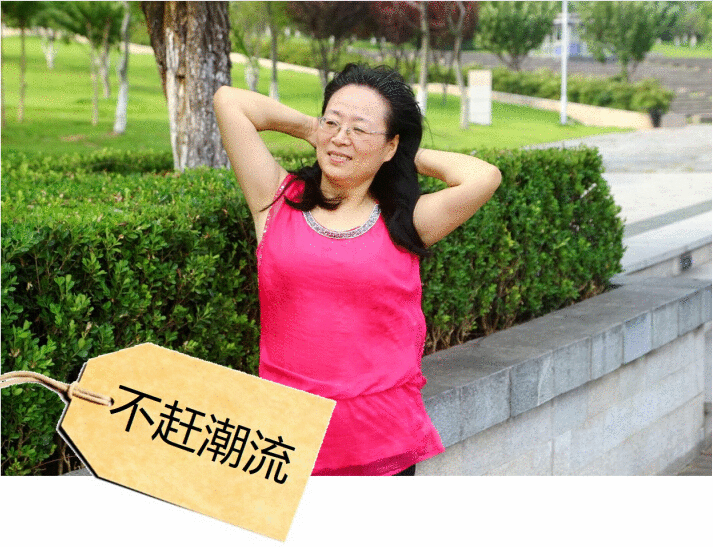
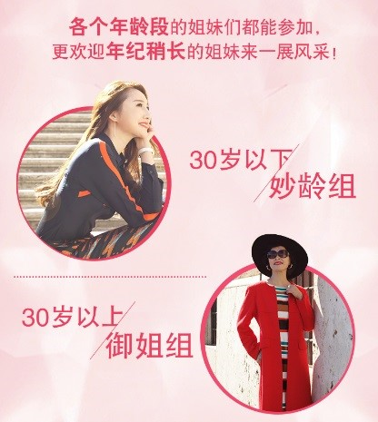

不做大妈！我，就是女神！
看她如何在百变美人挑战自我，成为逆龄女神！

看到这些标签，你脑中浮现的是谁？
对！我就是上述，被大家无情贴上这些标签的“大妈”。
在大家眼里，好像买菜做饭、带带孙子才是我应该有的日常生活。
可是，跳着广场舞的我们，也希望像年轻人一样有更大的舞台一展舞姿。
我，作为第一个大龄选手站上了玫琳凯百变美人季的舞台。从没想过，我也可以以另外一种姿态，挑战自己。
您的浏览器不支持此种视频格式。
这样的我，也绝不会是唯一一个站上舞台的大龄选手！
百变美人季今年特别增加“御姐组”组别，只为越来越多的像我这个年龄的女性能够圆梦舞台，一展风采！

所有内容最终解释权归玫琳凯（中国）所有